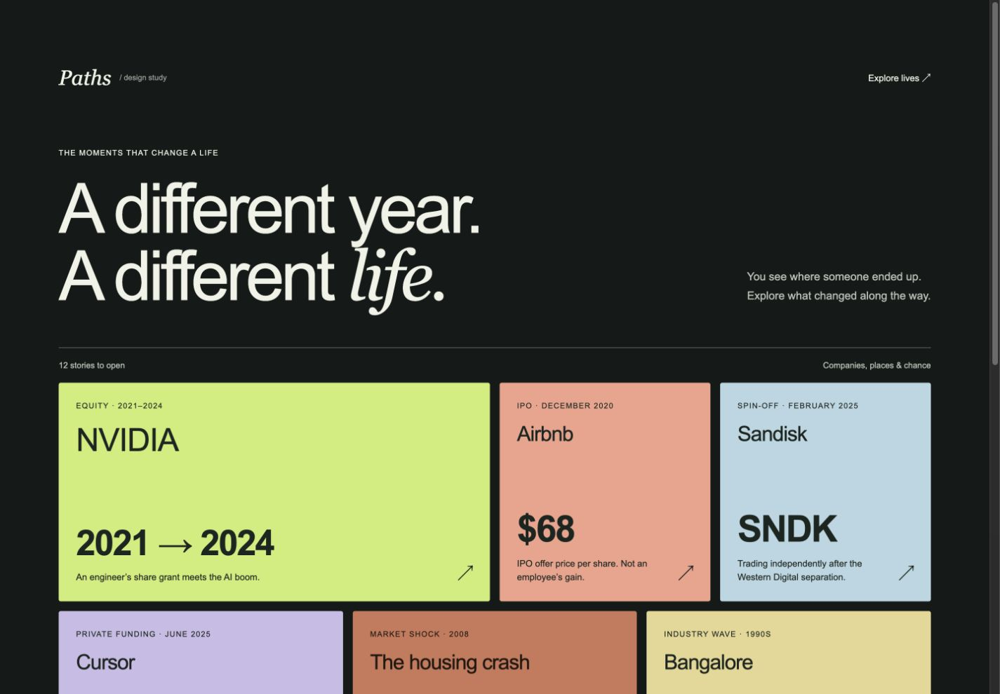
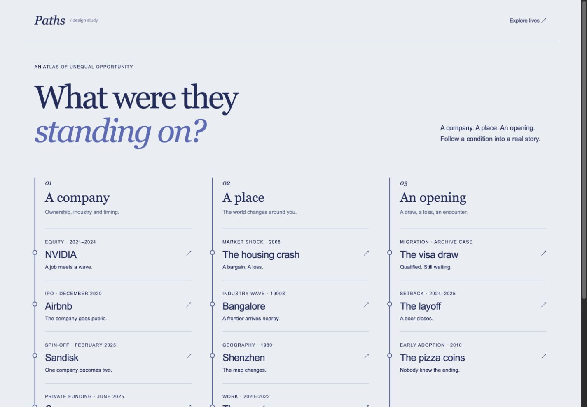
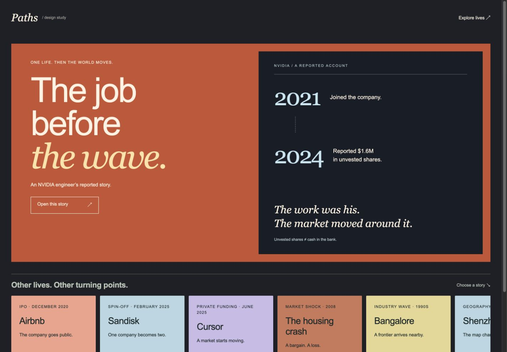

MORE TO EXPLORE. LESS TO READ.
Let the stories
do the explaining.

01 / Event gallery ↗
Recommended. Recognisable examples first; open the story you care about. Room for a growing catalog.

02 / Connected atlas ↗
Browse by the conditions around a life: a company, a place, an opening. Geography and structure lead.

03 / Documentary ↗
One story fills the stage. Other turning points sit in a filmstrip. Stronger narrative, slower discovery.
All three use the same 12 examples: nine existing archive cases plus sourced Sandisk, Cursor and Airbnb events. These are interactive design previews, not a finished replacement for the whole journey. Open a story to see its evidence and limits.